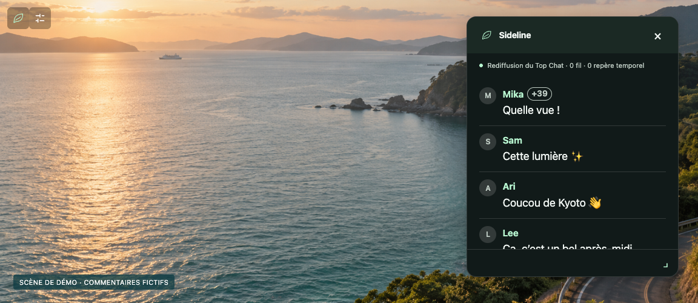
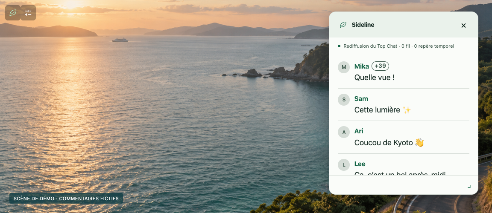
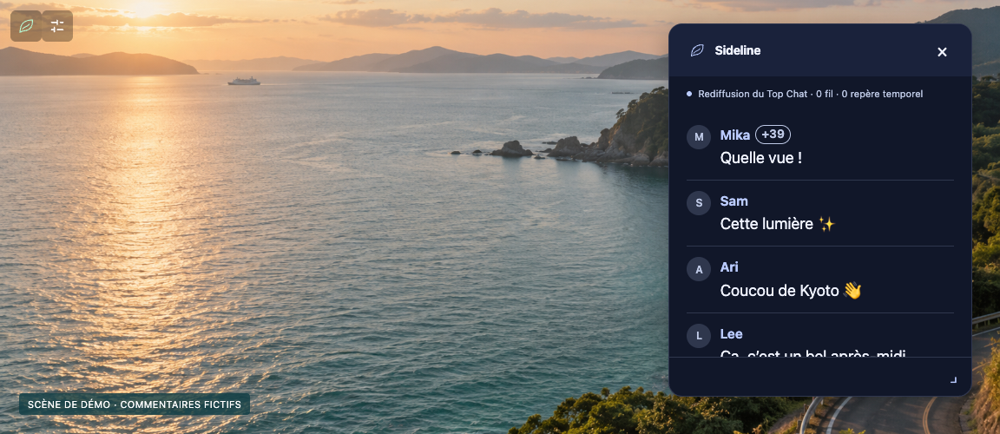
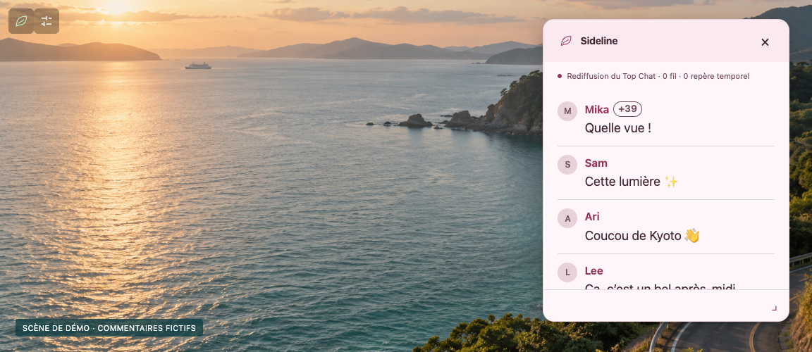

Sideline
SidelineTrouvez votre ambiance.
Forêt, Papier, Minuit ou Sakura : choisissez le thème qui vous plaît.

Forêt
Papier
Minuit
SakuraSidelineForêt, Papier, Minuit ou Sakura : choisissez le thème qui vous plaît.

Forêt
Papier
Minuit
Sakura